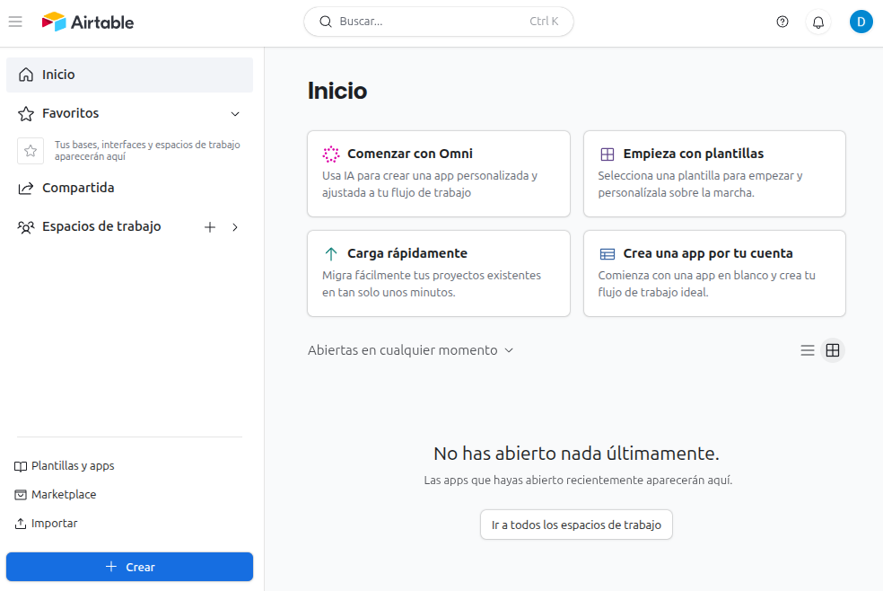
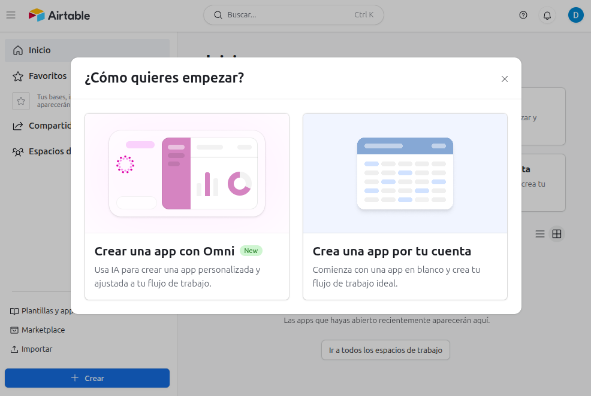
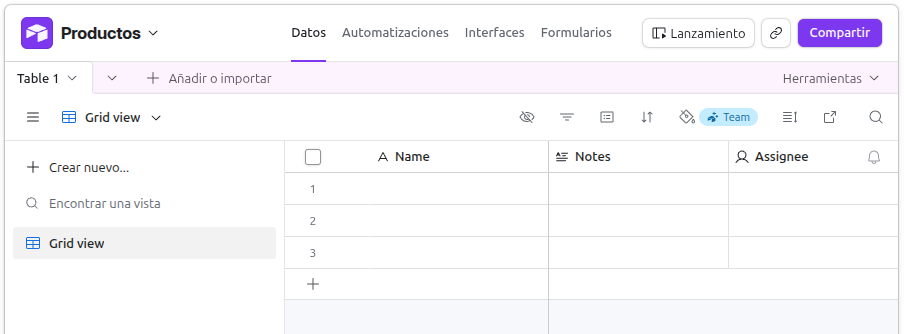
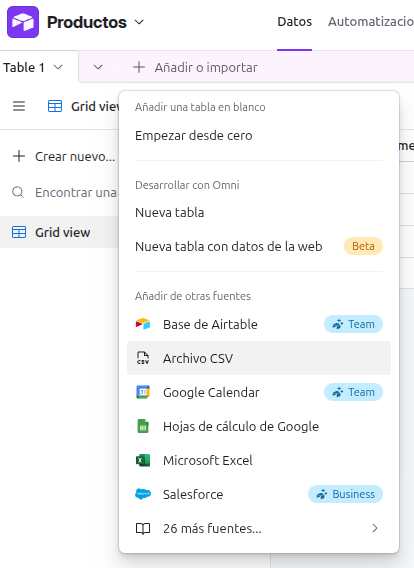
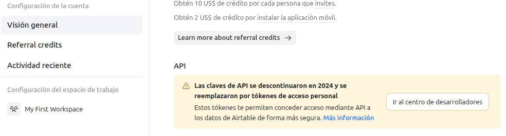
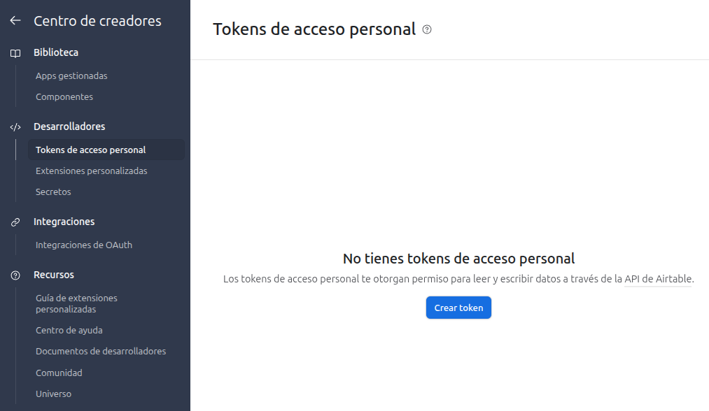
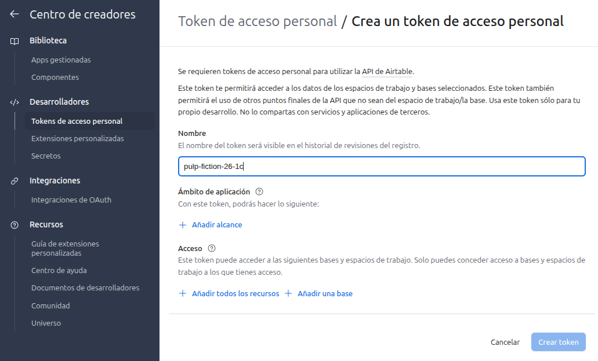
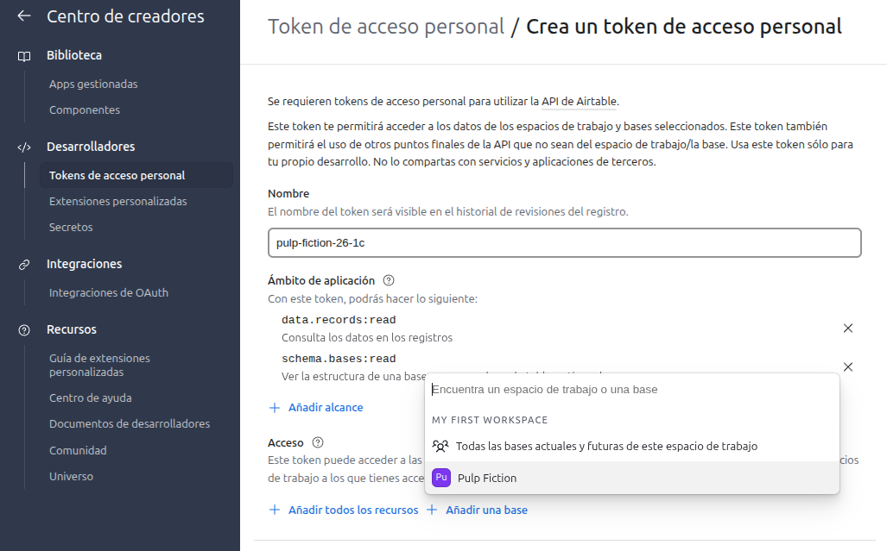

AWC | Clase 15, API
Application Programming Interface
Una API es una interfaz que permite que dos programas se comuniquen entre sí. Las funciones del programa principal son servidas a forma de opciones para ser consumidas por otro programa. Sirve principalmente para que varios programas puedan utilizar los recursos del programa principal sin la necesidad de saber cómo funciona por dentro
Tipos de API
Aunque HTML y CSS por si sólos no tienen "APIs" en el sentido tradicional, cuando los combinamos con Javascript el navegaedor expone varias APIs:
DOM API (Document Object Model)
Esta API le permite a JS leer y modificar el HTML.
1document.getElementById("boton")2document.querySelector(".clase")3element.innerHTML = "Hola"4element.addEventListener("click", ...)Web APIs en el frontend
- localStorage / sessionStorage, las cuales sirven para guardar datos en el navegador.
- Canvas API, sirve para dibujar gráficos, desplegar juegos y animaciones.
- Web Audio API, sirve para reproducir sonido.
- Geolocation API, obtener ubicación del usuario.
- Clipboard API, guarda en el portapapeles para poder copiar y pegar información.
- Intersection Observer API, detecta cuando un elemento aparece en pantalla.
- Resize Observer, Mutation, Observer, entre otras.
Fetch API
A través de esta API, realizamos peticiones a través del protocolo HTTPS. También conocida como API REST, es el tipo de API que asociamos cuando hablamos de ellas.
1fetch("https://api.ejemplo.com/usuarios")2 .then(res => res.json())CSS + Javascript / CSSOM - CSS Object Model
El CSSOM es como el DOM con HTML y JS, en este caso utilizamos la API del CSSOM para hacer las llamadas desde JS y editar las clases de los elementos.
1element.style.backgroundColor = "red"2element.classList.add("activo")3window.getComputedStyle(element)En resumen: API REST es un tipo de API que sirve para comunicar la aplicación del lado del cliente con el servidor
Browser APIs son todas las herramientas que en navegador tiene y nosotros desde Javascript controlamos y manipulamos.
Cuando comunmente hablamos de una API en React, nos referimos a utilizar componentes, hooks, contexto. Por ejemplo useState, useEffect
API GraphQL
GraphQL es un tipo de conexión a través de API que resuelve un problema escencial: muchas veces cuando conectamos a traves de API REST, la conexión nos envía demasiada información sin poder filtrarla. Por ejemplo, si necesitamos trabajar con los usuarios() de nuestra app, la petición nos envía todo el contenido sin filtrado.
A través de GraphQL podemos filtrar el pedido, mejorando el rendimiento de la conexión.
1query {2 user(id: "123") {3 nombre4 email5 posts {6 titulo7 comentarios { texto }8 }9 }10}Next.js / App Router
Cuando trabajamos con Next.js los datos pueden ser preparados directamente usando server components (componentes del lado del servidor) para realizar las consultas a base de datos directamente dentro de ellos. En este caso, el HTML llega ya renderizado al lado del cliente.
API REST con Airtable
Airtable es una plataforma propietaria de Google la cual sirve para trabajar con base de datos relacionales, sin la necesidad de crear un back-end. Tiene una interfaz visual, muy similar a una hoja de cálculo común y corriente.
En el contexto de la materia, esta herramienta nos permitirá crear un back-end de prueba para poder consumirlo a través de una llamada de tipo API REST directamente en nuestra aplicación, sin la necesidad de cambiar nuestro código local.
Airtable utiliza una Web API REST clásica. Los datos viaja a través de JSON y accede mediante HTTP requests (GET, POST, PATCH, DELETE).
Su método de verificación es a través de Personal Access Tokens (PAT).
1// Carga desde Airtable API REST2const AIRTABLE_BASE_ID = 'xxxxxxxxx';3const AIRTABLE_PAT = 'patxxxxxxxxxx';4 5async function cargarProductos() {6 const res = await fetch(`https://api.airtable.com/v0/${AIRTABLE_BASE_ID}/Productos`, {7 headers: { Authorization: `Bearer ${AIRTABLE_PAT}` }8 });9 const data = await res.json();10 productos = data.records.map(r => r.fields);11}Creación de la tabla
Primero deben crear su cuenta en Airtable. Dentro de la página, pueden empezar creando su proyecto. En la página de inicio pueden elegir la opción + Crear


En la vista de tabla, podemos ponerle nombre nombre al proyecto.

La tabla puede autocompletarse si importamos datos, por ejemplo, desde un archivo .csv.

Debemos crear un token de acceso para poder conectarnos a través de API REST con la app de Airtable.



Tenemos que setear los permisos de lectura con los valores data.records:read y schema.bases:read.
